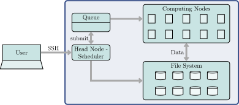
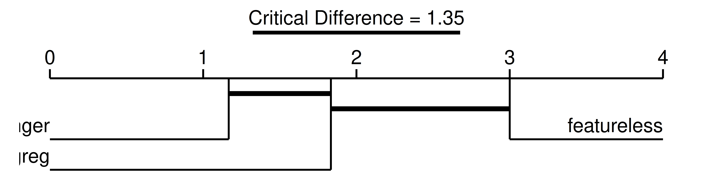

# featureless baseline
lrn_baseline = lrn("classif.featureless", id = "featureless")
# logistic regression pipeline
lrn_lr = lrn("classif.log_reg")
lrn_lr = as_learner(ppl("robustify", learner = lrn_lr) %>>% lrn_lr)
lrn_lr$id = "logreg"
lrn_lr$encapsulate("try", fallback = lrn_baseline)
# random forest pipeline
lrn_rf = lrn("classif.ranger")
lrn_rf = as_learner(ppl("robustify", learner = lrn_rf) %>>% lrn_rf)
lrn_rf$id = "ranger"
lrn_rf$encapsulate("try", fallback = lrn_baseline)
learners = list(lrn_lr, lrn_rf, lrn_baseline)11 Large-Scale Benchmarking
Sebastian Fischer
Ludwig-Maximilians-Universität München, and Munich Center for Machine Learning (MCML)
Michel Lang
Research Center Trustworthy Data Science and Security, and TU Dortmund University
Marc Becker
Ludwig-Maximilians-Universität München, and Munich Center for Machine Learning (MCML)
In machine learning, it is often difficult to evaluate methods using mathematical analysis alone. Even when formal analyses can be successfully applied, it is often an open question whether real-world datasets satisfy the necessary assumptions for the theorems to hold. Empirical benchmark experiments evaluate the performance of different algorithms on a wide range of datasets. These empirical investigations are essential for understanding the capabilities and limitations of existing methods and for developing new and improved approaches. Trustworthy benchmark experiments are often ‘large-scale’, which means they may make use of many datasets, measures, and learners. Moreover, datasets must span a wide range of domains and problem types as conclusions can only be drawn about the kind of datasets on which the benchmark study was conducted.
Large-scale benchmark experiments consist of three primary steps: sourcing the data for the experiment, executing the experiment, and analyzing the results; we will discuss each of these in turn. In Section 11.1 we will begin by discussing mlr3oml, which provides an interface between mlr3 and OpenML (Vanschoren et al. 2013), a popular tool for uploading and downloading datasets. Increasing the number of datasets leads to ‘large-scale’ experiments that may require significant computational resources, so in Section 11.2 we will introduce mlr3batchmark, which connects mlr3 with batchtools (Lang, Bischl, and Surmann 2017), which provides methods for managing and executing experiments on high-performance computing (HPC) clusters. Finally, in Section 11.3 we will demonstrate how to make use of mlr3benchmark to formally analyze the results from large-scale benchmark experiments.
Throughout this chapter, we will use the running example of benchmarking a random forest model against a logistic regression as in Couronné, Probst, and Boulesteix (2018). We will also assume that you have read Chapter 7 and Chapter 10. We make use of ppl("robustify") (Section 9.4) for automating common preprocessing steps. We also set a featureless baseline as a fallback learner (Section 10.2.2) and set "try" as our encapsulation method (Section 10.2.1), which logs errors/warnings to an external file that can be read by batchtools (we will return to this in Section 11.2.3).
As a starting example, we will compare our learners across three classification tasks using accuracy and three-fold CV.
design = benchmark_grid(tsks(c("german_credit", "sonar", "pima")),
learners, rsmp("cv", folds = 10))
bmr = benchmark(design)
bmr$aggregate(msr("classif.acc"))[, .(task_id, learner_id, classif.acc)] task_id learner_id classif.acc
1: german_credit logreg 0.7460
2: german_credit ranger 0.7630
3: german_credit featureless 0.7000
4: sonar logreg 0.7162
5: sonar ranger 0.8412
6: sonar featureless 0.5329
7: pima logreg 0.7747
8: pima ranger 0.7709
9: pima featureless 0.6511In this small experiment, random forests appears to outperform the other learners on all three datasets. However, this analysis is not conclusive as we only considered three tasks, and the performance differences might not be statistically significant. In the following, we will introduce some techniques to improve the study.
11.1 Getting Data with OpenML
To draw meaningful conclusions from benchmark experiments, a good choice of datasets and tasks is essential. OpenML is an open-source platform that facilitates the sharing and dissemination of machine learning research data, algorithms, and experimental results, in a standardized format enabling consistent cross-study comparison. OpenML’s design ensures that all data on the platform is ‘FAIR’ (Findability, Accessibility, Interoperability and Reusability), which ensures the data is easily discoverable and reusable. All entities on the platform have unique identifiers and standardized (meta)data that can be accessed via a REST API or the web interface.
OpenML
In this section, we will cover some of the main features of OpenML and how to use them via the mlr3oml interface package. In particular, we will discuss OpenML datasets, tasks, and task collections, but will not cover algorithms or experiment results here.
11.1.1 Datasets
Finding data from OpenML is possible via the website or its REST API that mlr3oml interfaces. list_oml_data() can be used to filter datasets for specific properties, for example by number of features, rows, or number of classes in a classification problem:
library(mlr3oml)
odatasets = list_oml_data(
number_features = c(10, 20),
number_instances = c(45000, 50000),
number_classes = 2
)odatasets[NumberOfFeatures < 16,
c("data_id", "name", "NumberOfFeatures", "NumberOfInstances")] data_id name NumberOfFeatures
1: 179 adult 15
2: 1590 adult 15
3: 43898 adult 15
4: 45051 adult-test 15
5: 45068 adult 15
---
8: 46553 Loan_Status 14
9: 46554 Loan_Status 14
10: 46563 Loan_Approval_Status_Classification 14
11: 46565 Loan_Approval_Status 14
12: 46910 bank-marketing 14
1 variable not shown: [NumberOfInstances]Note that list_oml_data() returns a data.table with many more meta-features than shown here; this table can itself be used to filter further.
We can see that some datasets have duplicated names, which is why each dataset also has a unique ID. By example, let us consider the ‘adult’ dataset with ID 1590. Metadata for the dataset is loaded with odt(), which returns an object of class OMLData.
odata = odt(id = 1590)
odata<OMLData:1590:adult> (48842x15)
* Default target: classThe OMLData object contains metadata about the dataset but importantly does not (yet) contain the data. This means that information about the dataset can be queried without having to load the entire data into memory, for example, the license and dimension of the data:
If we want to work with the actual data, then accessing the $data field will download the data, import it into R, and then store the data.frame in the OMLData object:
# first 5 rows and columns
odata$data[1:5, 1:5] age workclass fnlwgt education education.num
1: 25 Private 226802 11th 7
2: 38 Private 89814 HS-grad 9
3: 28 Local-gov 336951 Assoc-acdm 12
4: 44 Private 160323 Some-college 10
5: 18 <NA> 103497 Some-college 10
mlr3oml Cache
After $data has been called the first time, all subsequent calls to $data will be transparently redirected to the in-memory data.frame. Additionally, many objects can be permanently cached on the local file system by setting the option mlr3oml.cache to either TRUE or to a specific path to be used as the cache folder.
Data can then be converted into mlr3 backends (see Section 10.4) with the as_data_backend() function and then into tasks:
backend = as_data_backend(odata)
tsk_adult = as_task_classif(backend, target = "class")
tsk_adult
── <TaskClassif> (48842x15) ─────────────────────────────────────────────
• Target: class
• Target classes: >50K (positive class, 24%), <=50K (76%)
• Properties: twoclass
• Features (14):
• fct (8): education, marital.status, native.country, occupation,
race, relationship, sex, workclass
• int (6): age, capital.gain, capital.loss, education.num, fnlwgt,
hours.per.weekSome datasets on OpenML contain columns that should neither be used as a feature nor a target. The column names that are usually included as features are accessible through the field $feature_names, and we assign them to the mlr3 task accordingly. Note that for the dataset at hand, this would not have been necessary, as all non-target columns are to be treated as predictors, but we include it for clarity.
tsk_adult$col_roles$feature = odata$feature_names
tsk_adult
── <TaskClassif> (48842x15) ─────────────────────────────────────────────
• Target: class
• Target classes: >50K (positive class, 24%), <=50K (76%)
• Properties: twoclass
• Features (14):
• fct (8): education, marital.status, native.country, occupation,
race, relationship, sex, workclass
• int (6): age, capital.gain, capital.loss, education.num, fnlwgt,
hours.per.week11.1.2 Task
OpenML tasks are built on top of OpenML datasets and additionally specify the target variable, the train-test splits to use for resampling, and more. Note that this differs from mlr3 Task objects, which do not contain information about the resampling procedure. Similarly to mlr3, OpenML has different types of tasks, such as regression and classification. Analogously to filtering datasets, tasks can be filtered with list_oml_tasks(). To find a task that makes use of the data we have been using, we would pass the data ID to the data_id argument:
# tasks making use of the adult data
adult_tasks = list_oml_tasks(data_id = 1590)adult_tasks[task_type == "Supervised Classification", task_id] [1] 7592 14947 126025 146154 146598 168878 233099 359983 361515
[10] 362136From these tasks, we randomly select the task with ID 359983. We can load the object using otsk(), which returns an OMLTask object.
otask = otsk(id = 359983)
otask<OMLTask:359983>
* Type: Supervised Classification
* Data: adult (id: 1590; dim: 48842x15)
* Target: class
* Estimation: crossvalidation (id: 1; repeats: 1, folds: 10)The OMLData object associated with the underlying dataset can be accessed through the $data field.
otask$data<OMLData:1590:adult> (48842x15)
* Default target: classThe data splits associated with the estimation procedure are accessible through the field $task_splits. In mlr3 terms, these are the instantiation of a Resampling on a specific Task.
otask$task_splits type rowid repeat. fold
1: TRAIN 32427 0 0
2: TRAIN 13077 0 0
3: TRAIN 15902 0 0
4: TRAIN 17703 0 0
5: TRAIN 35511 0 0
---
488416: TEST 8048 0 9
488417: TEST 12667 0 9
488418: TEST 43944 0 9
488419: TEST 25263 0 9
488420: TEST 43381 0 9The OpenML task can be converted to both an mlr3::Task and ResamplingCustom instantiated on the task using as_task() and as_resampling(), respectively:
tsk_adult = as_task(otask)
tsk_adult
── <TaskClassif> (48842x15) ─────────────────────────────────────────────
• Target: class
• Target classes: >50K (positive class, 24%), <=50K (76%)
• Properties: twoclass
• Features (14):
• fct (8): education, marital.status, native.country, occupation,
race, relationship, sex, workclass
• int (6): age, capital.gain, capital.loss, education.num, fnlwgt,
hours.per.weekresampling = as_resampling(otask)
resampling
── <ResamplingCustom> : Custom Splits ───────────────────────────────────
• Iterations: 10
• Instantiated: TRUE
• Parameters: list()mlr3oml also allows direct construction of mlr3 tasks and resamplings with the standard tsk() and rsmp() constructors, e.g.:
tsk("oml", task_id = 359983)
── <TaskClassif> (48842x15) ─────────────────────────────────────────────
• Target: class
• Target classes: >50K (positive class, 24%), <=50K (76%)
• Properties: twoclass
• Features (14):
• fct (8): education, marital.status, native.country, occupation,
race, relationship, sex, workclass
• int (6): age, capital.gain, capital.loss, education.num, fnlwgt,
hours.per.week11.1.3 Task Collection
The OpenML task collection is a container object bundling existing tasks. This allows for the creation of benchmark suites, which are curated collections of tasks that satisfy certain quality criteria. Examples include the OpenML CC-18 benchmark suite (Bischl et al. 2021), the AutoML benchmark (Gijsbers et al. 2022) and the benchmark for tabular deep learning (Grinsztajn, Oyallon, and Varoquaux 2022). OMLCollection objects are loaded with ocl(), by example we will look at CC-18, which has ID 99:
otask_collection = ocl(id = 99)otask_collection<OMLCollection: 99> OpenML-CC18 Curated Class[...]
* data: 72
* tasks: 72The task includes 72 classification tasks on different datasets that can be accessed through $task_ids:
otask_collection$task_ids[1:5] # first 5 tasks in the collection[1] 3 6 11 12 14Task collections can be used to quickly define benchmark experiments in mlr3. To easily construct all tasks and resamplings from the benchmarking suite, you can use as_tasks() and as_resamplings() respectively:
tasks = as_tasks(otask_collection)
resamplings = as_resamplings(otask_collection)Alternatively, if we wanted to filter the collection further, say to a binary classification experiment with six tasks, we could run list_oml_tasks() with the task IDs from the CC-18 collection as argument task_id. We can either use the list_oml_tasks() argument to request the number of classes to be 2, or we can make use of the fact that the result of list_oml_tasks() is a data.table and subset the resulting table.
binary_cc18 = list_oml_tasks(
limit = 6,
task_id = otask_collection$task_ids,
number_classes = 2
)We now define the tasks and resamplings which we will use for comparing the logistic regression with the random forest learner. Note that all resamplings in this collection consist of exactly 10 iterations.
# load tasks as a list
otasks = lapply(binary_cc18$task_id, otsk)
# convert to mlr3 tasks and resamplings
tasks = as_tasks(otasks)
resamplings = as_resamplings(otasks)To define the design table, we use benchmark_grid() and set paired to TRUE, which is used in situations where each resampling is instantiated on a corresponding task (therefore the tasks and resamplings below must have the same length) and each learner should be evaluated on every resampled task.
large_design = benchmark_grid(tasks, learners, resamplings,
paired = TRUE)
large_design[1:6] # first 6 rows task learner resampling
1: kr-vs-kp logreg custom
2: kr-vs-kp ranger custom
3: kr-vs-kp featureless custom
4: breast-w logreg custom
5: breast-w ranger custom
6: breast-w featureless customHaving set up our large experiment, we can now look at how to efficiently carry it out on a cluster.
11.2 Benchmarking on HPC Clusters
As discussed in Section 10.1, parallelization of benchmark experiments is straightforward as they are embarrassingly parallel. However, for large experiments, parallelization on a high-performance computing (HPC) cluster is often preferable. batchtools provides a framework to simplify running large batches of computational experiments in parallel from R on such sites. It is highly flexible, making it suitable for a wide range of computational experiments, including machine learning, optimization, simulation, and more.
High-performance Computing
"batchtools" backend for future
In Section 10.1.2 we touched upon different parallelization backends. The package future includes a "batchtools" plan, however, this does not allow the additional control that comes with working with batchtools directly.
An HPC cluster is a collection of interconnected computers or servers providing computational power beyond what a single computer can achieve. HPC clusters typically consist of multiple compute nodes, each with multiple CPU/GPU cores, memory, and local storage. These nodes are usually connected by a high-speed network and network file system which enables the nodes to communicate and work together on a given task. The most important difference between HPC clusters and a personal computer (PC), is that the nodes often cannot be accessed directly, but instead, computational jobs are queued by a scheduling system such as Slurm (Simple Linux Utility for Resource Management). A scheduling system is a software tool that orchestrates the allocation of computing resources to users or applications on the cluster. It ensures that multiple users and applications can access the resources of the cluster fairly and efficiently, and also helps to maximize the utilization of the computing resources.
Figure 11.1 contains a rough sketch of an HPC architecture. Multiple users can log into the head node (typically via SSH) and add their computational jobs to the queue by sending a command of the form “execute computation X using resources Y for Z amount of time”. The scheduling system controls when these computational jobs are executed.
For the rest of this section, we will look at how to use batchtools and mlr3batchmark for submitting jobs, adapting jobs to clusters, ensuring reproducibility, querying job status, and debugging failures.

11.2.1 Experiment Registry Setup
batchtools is built around experiments or ‘jobs’. One replication of a job is defined by applying a (parameterized) algorithm to a (parameterized) problem. A benchmark experiment in batchtools consists of running many such experiments with different algorithms, algorithm parameters, problems, and problem parameters. Each such experiment is computationally independent of all other experiments and constitutes the basic level of computation batchtools can parallelize. For this section, we will define a single batchtools experiment as one resampling iteration of one learner on one task, in Section 11.2.4 we will look at different ways of defining an experiment.
The first step in running an experiment is to create or load an experiment registry with makeExperimentRegistry() or loadRegistry() respectively. This constructs the inter-communication object for all functions in batchtools and corresponds to a folder on the file system. Among other things, the experiment registry stores the algorithms, problems, and job definitions; log outputs and status of submitted, running, and finished jobs; job results; and the “cluster function” that defines the interaction with the scheduling system in a scheduling-software-agnostic way.
Below, we create a registry in a subdirectory of our working directory – on a real cluster, make sure that this folder is stored on a shared network filesystem, otherwise, the nodes cannot access it. We also set the registry’s seed to 1 and the packages to "mlr3verse", which will make these packages available in all our experiments.
library(batchtools)
# create registry
reg = makeExperimentRegistry(
file.dir = "./experiments",
seed = 1,
packages = "mlr3verse"
)Once the registry has been created, we need to populate it with problems and algorithms to form the jobs, this is most easily carried out with mlr3batchmark, although finer control is possible with batchtools and will be explored in Section 11.2.4. batchmark() converts mlr3 tasks and resamplings to batchtools problems, and converts mlr3 learners to batchtools algorithms; jobs are then created for all resampling iterations.
library(mlr3batchmark)
batchmark(large_design, reg = reg)Now the registry includes six problems, one for each resampled task, and \(180\) jobs from \(3\) learners \(\times\) \(6\) tasks \(\times\) \(10\) resampling iterations. The single algorithm in the registry is because mlr3batchmark specifies a single algorithm that is parametrized with the learner IDs.
regExperiment Registry
Backend : Interactive
File dir : /__w/mlr3book/mlr3book/book/chapters/chapter11/experiments
Work dir : /__w/mlr3book/mlr3book/book/chapters/chapter11
Jobs : 180
Problems : 6
Algorithms: 1
Seed : 1
Writeable : TRUEBy default, the “Interactive” cluster function (see makeClusterFunctionsInteractive()) is used – this is the abstraction for the scheduling system, and “interactive” here means to not use a real scheduler but instead to use the interactive R session for sequential computation. getJobTable() can be used to get more detailed information about the jobs. Here, we only show a few selected columns for readability and unpack the list columns algo.pars and prob.pars using unwrap().
job_table = getJobTable(reg = reg)
job_table = unwrap(job_table)
job_table = job_table[,
.(job.id, learner_id, task_id, resampling_id, repl)
]
job_table job.id learner_id task_id resampling_id repl
1: 1 logreg kr-vs-kp custom 1
2: 2 logreg kr-vs-kp custom 2
3: 3 logreg kr-vs-kp custom 3
4: 4 logreg kr-vs-kp custom 4
5: 5 logreg kr-vs-kp custom 5
---
176: 176 featureless spambase custom 6
177: 177 featureless spambase custom 7
178: 178 featureless spambase custom 8
179: 179 featureless spambase custom 9
180: 180 featureless spambase custom 10In this output, we can see how each job is now assigned a unique job.id and that each row corresponds to a single iteration (column repl) of a resample experiment.
11.2.2 Job Submission
With the experiments defined, we can now submit them to the cluster. However, it is best practice to first test each algorithm individually using testJob(). By example, we will only test the first job (id = 1) and will use an external R session (external = TRUE).
result = testJob(1, external = TRUE, reg = reg)Once we are confident that the jobs are defined correctly (see Section 11.2.3 for jobs with errors), we can proceed with their submission, by specifying the resource requirements for each computational job and then optionally grouping jobs.
Configuration of resources is dependent on the cluster function set in the registry. We will assume we are working with a Slurm cluster and accordingly initialize the cluster function with makeClusterFunctionsSlurm() and will make use of the slurm-simple.tml template file that can be found in a subdirectory of the batchtools package itself (the exact location can be found by running system.file("templates", package = "batchtools")), or the batchtools GitHub repository. A template file is a shell script with placeholders filled in by batchtools and contains the command to start the computation via Rscript or R CMD batch, as well as comments which serve as annotations for the scheduler, for example, to communicate resources or paths on the file system.
The exemplary template should work on many Slurm installations out-of-the-box, but you might have to modify it for your cluster – it can be customized to work with more advanced configurations.
cf = makeClusterFunctionsSlurm(template = "slurm-simple")To proceed with the examples on a local machine, we recommend setting the cluster function to a Socket backend with makeClusterFunctionsSocket(). The chosen cluster function can be saved to the registry by passing it to the $cluster.functions field.
reg$cluster.functions = cf
saveRegistry(reg = reg)With the registry setup, we can now decide if we want to run the experiments in chunks (Section 10.1) and then specify the resource requirements for the submitted jobs.
For this example, we will use chunk() to chunk the jobs such that five iterations of one resample experiment are run sequentially in one computational job – in practice the optimal grouping will be highly dependent on your experiment (Section 10.1).
ids = job_table$job.id
chunks = data.table(
job.id = ids, chunk = chunk(ids, chunk.size = 5, shuffle = FALSE)
)
chunks[1:6] # first 6 jobs job.id chunk
1: 1 1
2: 2 1
3: 3 1
4: 4 1
5: 5 1
6: 6 2The final step is to decide the resource requirements for each job. The set of resources depends on your cluster and the corresponding template file. If you are unsure about the resource requirements, you can start a subset of jobs with liberal resource constraints, e.g. the maximum runtime allowed for your computing site. Measured runtimes and memory usage can later be queried with getJobTable() and used to better estimate the required resources for the remaining jobs. In this example we will set the number of CPUs per job to 1, the walltime (time limit before jobs are stopped by the scheduler) to one hour (3600 seconds), and the RAM limit (memory limit before jobs are stopped by the scheduler) to 8000 megabytes.
resources = list(ncpus = 1, walltime = 3600, memory = 8000)With all the elements in place, we can now submit our jobs.
submitJobs(ids = chunks, resources = resources, reg = reg)
# wait for all jobs to terminate
waitForJobs(reg = reg)
Submitting Jobs
A good approach to submit computational jobs is by using a persistent R session (e.g., with Terminal Multiplexer (TMUX)) on the head node to continue job submission (or computation, depending on the cluster functions) in the background.
However, batchtools registries are saved to the file system and therefore persistent when the R session is terminated. This means that you can also submit jobs from an interactive R session, terminate the session, and analyze the results later in a new session.
11.2.3 Job Monitoring, Error Handling, and Result Collection
Once jobs have been submitted, they can then be queried with getStatus() to find their current status and the results (or errors) can be investigated. If you terminated your R sessions after job submission, you can load the experiment registry with loadRegistry().
getStatus(reg = reg)Status for 180 jobs at 2026-02-24 09:05:06:
Submitted : 180 (100.0%)
-- Queued : 0 ( 0.0%)
-- Started : 180 (100.0%)
---- Running : 0 ( 0.0%)
---- Done : 180 (100.0%)
---- Error : 0 ( 0.0%)
---- Expired : 0 ( 0.0%)To query the ids of jobs in the respective categories, see findJobs() and, e.g., findNotSubmitted() or findDone(). In our case, we can see all experiments finished and none expired (i.e., were removed from the queue without ever starting, Expired : 0) or crashed (Error : 0). It can still be sensible to use grepLogs() to check the logs for suspicious messages and warnings before proceeding with the analysis of the results.
In any large-scale experiment many things can and will go wrong, for example, the cluster might have an outage, jobs may run into resource limits or crash, or there could be bugs in your code. In these situations, it is important to quickly determine what went wrong and to recompute only the minimal number of required jobs.
To see debugging in practice we will use the debug learner (see Section 10.2) with a 50% probability of erroring in training. When calling batchmark() again, the new experiments will be added to the registry on top of the existing jobs.
extra_design = benchmark_grid(tasks,
lrn("classif.debug", error_train = 0.5), resamplings, paired = TRUE)
batchmark(extra_design, reg = reg)
Registry Argument
All batchtools functions that interoperate with a registry take a registry as an argument. By default, this argument is set to the last created registry, which is currently the reg object defined earlier. We pass it explicitly in this section for clarity.
Now we can get the IDs of the new jobs (which have not been submitted yet) and submit them by passing their IDs.
ids = findNotSubmitted(reg = reg)
submitJobs(ids, reg = reg)After these jobs have terminated, we can get a summary of those that failed:
getStatus(reg = reg)Status for 240 jobs at 2026-02-24 09:05:09:
Submitted : 240 (100.0%)
-- Queued : 0 ( 0.0%)
-- Started : 240 (100.0%)
---- Running : 0 ( 0.0%)
---- Done : 213 ( 88.8%)
---- Error : 27 ( 11.2%)
---- Expired : 0 ( 0.0%)error_ids = findErrors(reg = reg)
summarizeExperiments(error_ids, by = c("task_id", "learner_id"),
reg = reg) task_id learner_id .count
1: kr-vs-kp classif.debug 6
2: breast-w classif.debug 3
3: credit-approval classif.debug 5
4: credit-g classif.debug 6
5: diabetes classif.debug 5
6: spambase classif.debug 2In a real experiment, we would now investigate the debug learner further to understand why it errored, try to fix those bugs, and then potentially rerun those experiments only.
Assuming learners have been debugged (or we are happy to ignore them), we can then collect the results of our experiment with reduceResultsBatchmark(), which constructs a BenchmarkResult from the results. Below we filter out results from the debug learner.
ids = findExperiments(algo.pars = learner_id != "classif.debug",
reg = reg)
bmr = reduceResultsBatchmark(ids, reg = reg)
bmr$aggregate()[1:5] nr task_id learner_id resampling_id iters classif.ce
1: 1 kr-vs-kp logreg custom 10 0.02566
2: 2 kr-vs-kp ranger custom 10 0.01377
3: 3 kr-vs-kp featureless custom 10 0.47778
4: 4 breast-w logreg custom 10 0.03578
5: 5 breast-w ranger custom 10 0.02861
Hidden columns: resample_result11.2.4 Custom Experiments with batchtools
This section covers advanced ML or technical details.
In general, we recommend using mlr3batchmark for scheduling simpler mlr3 jobs on an HPC, however, we will also briefly show you how to use batchtools without mlr3batchmark for finer control over your experiment. Again we start by creating an experiment registry.
reg = makeExperimentRegistry(
file.dir = "./experiments-custom",
seed = 1,
packages = "mlr3verse"
)“Problems” are then manually registered with addProblem(). In this example, we will register all task-resampling combinations of the large_design above using the task ids as unique names. We specify that the data for the problem (i.e., the static data that is trained/tested by the learner) is the task/resampling pair. Finally, we pass a function (fun, dynamic problem part) that takes in the static problem data and returns it as the problem instance without making changes (Figure 11.2). The fun shown below is the default behavior and could be omitted, we show it here for clarity. This function could be more complex and take further parameters to modify the problem instance dynamically.
for (i in seq_along(tasks)) {
addProblem(
name = tasks[[i]]$id,
data = list(task = tasks[[i]], resampling = resamplings[[i]]),
fun = function(data, job, ...) data,
reg = reg
)
}![The diagram shows a rectangle that says 'static problem part, data', with an arrow pointing to 'dynamic problem function, fun(data, ...)' and 'algorithm function, fun(data, instance, ...)'. A box that says 'problem design, (addExperiments)' also has an arrow to the 'dynamic...' box. The 'dynamic...' box then has an arrow with text 'instance' that points to the 'algorithm function' box. A box that says 'algorithm design, (addExperiments)' also points to the 'algorithm function' box. Finally the 'algorithm function' box points to 'result'.](Figures/mlr3book_figures-31.svg)
Next, we need to specify the algorithm to run with addAlgorithm(). Algorithms are again specified with a unique name, as well as a function to define the computational steps of the experiment and to return its result.
Here, we define one job to represent a complete resample experiment. In general, algorithms in batchtools may return arbitrary objects – those are simply stored on the file system and can be processed with a custom function while collecting the results.
addAlgorithm(
"run_learner",
fun = function(instance, learner, job, ...) {
resample(instance$task, learner, instance$resampling)
},
reg = reg
)Finally, we will define concrete experiments with addExperiments() by passing problem designs (prob.designs) and algorithm designs (algo.designs) that assign parameters to problems and algorithms, respectively (Figure 11.2).
In the code below, we add all resampling iterations for the six tasks as experiments. By leaving prob.designs unspecified, experiments for all existing problems are created per default. We set the learner parameter of our algorithm ("run_learner") to be the three learners from our large_design object. Note that whenever an experiment is added, the current seed is assigned to the experiment and then incremented.
alg_des = list(run_learner = data.table(learner = learners))
addExperiments(algo.designs = alg_des, reg = reg)
summarizeExperiments()Our jobs can now be submitted to the cluster; by not specifying specific job IDs, all experiments are submitted.
submitJobs(reg = reg)We can retrieve the job results using loadResult(), which outputs the objects returned by the algorithm function, which in our case is a ResampleResult. To retrieve all results at once, we can use reduceResults() to create a single BenchmarkResult. For this, we use the combine function c() which can combine multiple objects of type ResampleResult or BenchmarkResult to a single BenchmarkResult.
rr = loadResult(1, reg = reg)
as.data.table(rr)[1:5] task learner resampling
1: <TaskClassif:kr-vs-kp> <GraphLearner:logreg> <ResamplingCustom>
2: <TaskClassif:kr-vs-kp> <GraphLearner:logreg> <ResamplingCustom>
3: <TaskClassif:kr-vs-kp> <GraphLearner:logreg> <ResamplingCustom>
4: <TaskClassif:kr-vs-kp> <GraphLearner:logreg> <ResamplingCustom>
5: <TaskClassif:kr-vs-kp> <GraphLearner:logreg> <ResamplingCustom>
2 variables not shown: [iteration, prediction]bmr = reduceResults(c, reg = reg)
bmr$aggregate()[1:5] nr task_id learner_id resampling_id iters classif.ce
1: 1 kr-vs-kp logreg custom 10 0.02566
2: 2 kr-vs-kp ranger custom 10 0.01283
3: 3 kr-vs-kp featureless custom 10 0.47778
4: 4 breast-w logreg custom 10 0.03578
5: 5 breast-w ranger custom 10 0.03004
Hidden columns: resample_result11.3 Statistical Analysis
The final step of a benchmarking experiment is to use statistical tests to determine which (if any) of our learners performed the best. mlr3benchmark provides infrastructure for applying statistical significance tests on BenchmarkResult objects.
Currently, Friedman tests and pairwise Friedman-Nemenyi tests (Demšar 2006) are supported to analyze benchmark experiments with at least two independent tasks and at least two learners. As a first step, we recommend performing a pairwise comparison of learners using pairwise Friedman-Nemenyi tests with $friedman_posthoc(). This method first performs a global comparison to see if any learner is statistically better than another. To use these methods we first convert the benchmark result to a BenchmarkAggr object using as_benchmark_aggr().
library(mlr3benchmark)
bma = as_benchmark_aggr(bmr, measures = msr("classif.ce"))
bma$friedman_posthoc()
Pairwise comparisons using Nemenyi-Wilcoxon-Wilcox all-pairs test for a two-way balanced complete block designdata: ce and learner_id and task_id logreg ranger
ranger 0.4804 -
featureless 0.1072 0.0043
P value adjustment method: single-stepThese results indicate a statistically significant difference between the "featureless" learner and "ranger" (assuming \(p\leq0.05\) is significant). This table can be visualized in a critical difference plot (Figure 11.3), which typically shows the mean rank of a learning algorithm on the x-axis along with a thick horizontal line that connects learners that are pairwise not significantly different (while correcting for multiple tests).
autoplot(bma, type = "cd", ratio = 1/5)Warning in geom_segment(aes(x = 0, xend = max(rank) + 1, y = 0, yend = 0)): All aesthetics have length 1, but the data has 3 rows.
ℹ Please consider using `annotate()` or provide this layer with data
containing a single row.

Using Figure 11.3 we can conclude that on average the random forest had the lowest (i.e., best) rank, followed by the logistic regression, and then the featureless baseline. While the random forest was statistically better performing than the baseline (no connecting line in Figure 11.3), it was not statistically superior to the logistic regression (connecting line in Figure 11.3). We could now further compare this with the large benchmark study conducted by Couronné, Probst, and Boulesteix (2018), where the random forest outperformed the logistic regression in 69% of 243 real-world datasets.
11.4 Conclusion
In this chapter, we have explored how to conduct large-scale machine learning experiments using mlr3. We have shown how to acquire diverse datasets from OpenML through the mlr3oml interface package, how to execute large-scale experiments with batchtools and mlr3batchmark integration, and finally how to analyze the results of these experiments with mlr3benchmark. For further reading about batchtools we recommend Lang, Bischl, and Surmann (2017) and Bischl et al. (2015).
| Class | Constructor/Function | Fields/Methods |
|---|---|---|
OMLData |
odt() |
$data; $feature_names
|
OMLTask |
otsk() |
$data; $task_splits
|
OMLCollection |
ocl() |
$task_ids |
Registry |
makeExperimentRegistry() |
submitJobs(); getStatus(); reduceResultsBatchmark; getJobTable
|
batchmark() |
- | |
BenchmarkAggr() |
as_benchmark_aggr() |
$friedman_posthoc() |
11.5 Exercises
In these exercises, we will conduct an empirical study analyzing whether a random forest is predictively stronger than a single decision tree. Our null hypothesis is that there is no significant performance difference.
- Load the OpenML collection with ID 269, which contains regression tasks from the AutoML benchmark (Gijsbers et al. 2022). Peek into this suite to study the contained data sets and their characteristics. Then find all tasks with less than 4000 observations and convert them to
mlr3tasks. - Create an experimental design that compares
lrn("regr.ranger")andlrn("regr.rpart")on those tasks. Use the robustify pipeline for both learners and a featureless fallback learner. You can use three-fold CV instead of the OpenML resamplings to save time. Run the comparison experiments withbatchtools. Use default hyperparameter settings and do not perform any tuning to keep the experiments simple. - Conduct a global Friedman test and, if appropriate, post hoc Friedman-Nemenyi tests, and interpret the results. As an evaluation measure, use the MSE.
11.6 Citation
Please cite this chapter as:
Fischer S, Lang M, Becker M. (2024). Large-Scale Benchmarking. In Bischl B, Sonabend R, Kotthoff L, Lang M, (Eds.), Applied Machine Learning Using mlr3 in R. CRC Press. https://mlr3book.mlr-org.com/large-scale_benchmarking.html.
@incollection{citekey,
author = "Sebastian Fischer and Michel Lang and Marc Becker",
title = "Large-Scale Benchmarking",
booktitle = "Applied Machine Learning Using {m}lr3 in {R}",
publisher = "CRC Press", year = "2024",
editor = "Bernd Bischl and Raphael Sonabend and Lars Kotthoff and Michel Lang",
url = "https://mlr3book.mlr-org.com/large-scale_benchmarking.html"
}